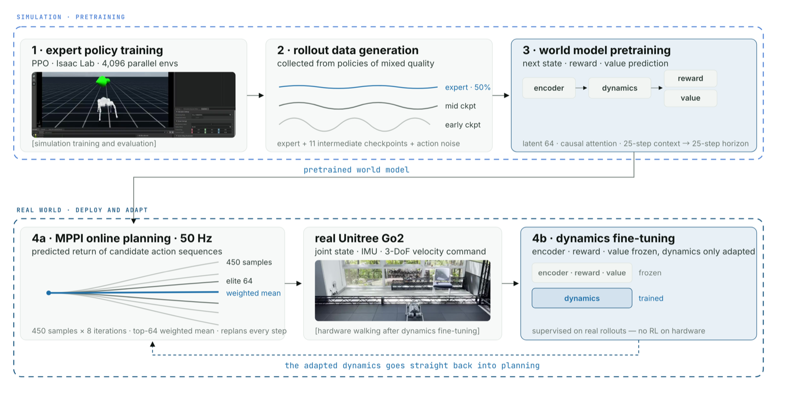

Project 03 · KETI · January 2025 – Present · SimDist reproduction and hardware deployment Project: AI 내장형 다중감각지능 통합모듈 및 로봇플랫폼 실증기술 개발
The learned world model planning on a real Unitree Go2 at 50 Hz
after dynamics fine-tuning.
50 Hzplanning on real hardware
Dynamicsthe model component adapted on hardware data
Overview
A latent world model is pretrained in simulation, then planned against on a real
quadruped — and adaptation between the two is performed by fine-tuning only the dynamics
on real-robot data. I reproduced this approach, published as
SimDist, and deployed it on a Unitree Go2 —
the method is the original authors'; the work here is getting it to run on the hardware.
Method

During adaptation, the encoder, reward and value models stay frozen and only the dynamics
model is fine-tuned on real rollouts. This turns the adaptation step into supervised
dynamics learning, without an additional round of reinforcement learning on hardware.
Training and planning configuration
Expert data. PPO in Isaac Lab with 4,096 parallel environments. The rollout mixture
uses expert actions with probability 0.5, 11 intermediate checkpoints and action noise.
World model. A 64-D latent representation with causal attention, using 25-step
context and a 25-step prediction horizon, with dynamics, reward and value predictions.
MPPI. 450 candidate sequences, eight optimization iterations and 64 elite samples
for the weighted update; the controller replans at a target rate of 50 Hz.
Hardware input. Joint positions and velocities, IMU-derived base angular velocity
and projected gravity, plus task commands and phase information.
What I did
Built the proprioceptive observation pipeline over the Unitree SDK — joint positions and
velocities, projected gravity — and the deployment loop that plans at 50 Hz.
Reproduced simulation pretraining, online planning and deployment on the physical Go2,
then compared the simulation-pretrained and dynamics-fine-tuned models.
Results
Qualitative only — a quantitative evaluation is still to be collected. Transferred
straight from simulation the gait is visibly unstable on hardware; after dynamics
fine-tuning the same model walks. The videos below are the comparison as it stands, and the
numbers that would make it a claim — tracking error, distance before a fall, success across
commanded velocities — are the next thing to measure.
Before dynamics fine-tuning. The world model transferred straight from
simulation to hardware.After dynamics fine-tuning. The same model, dynamics adapted on real
rollouts.
Simulation evaluation. The pretrained model planned against in
simulation, before anything reaches hardware.
Related simulation work — mjlab and PPO
Within the same project on multisensory intelligence and robot-platform validation,
I also worked on three quadruped tasks in mjlab: flat-ground walking, box jumping and
leaping, with task-specific observations, rewards and termination conditions.
This work reached the simulation-training stage only. Retained checkpoints, quantitative
results and rollout videos are unavailable, so no hardware deployment or task-success
claim is made for these mjlab tasks.
Stack
world model · MPPI · PPO · Isaac Lab · MuJoCo · mjlab ·
Unitree SDK · Python / PyTorch